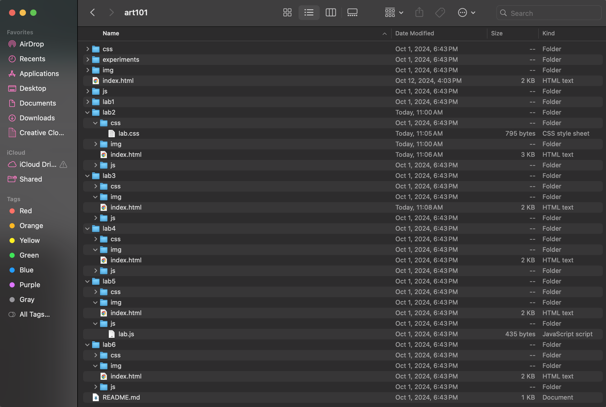
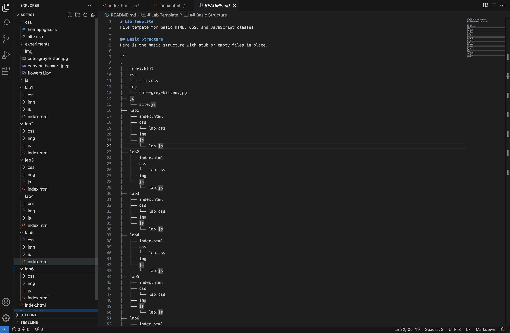
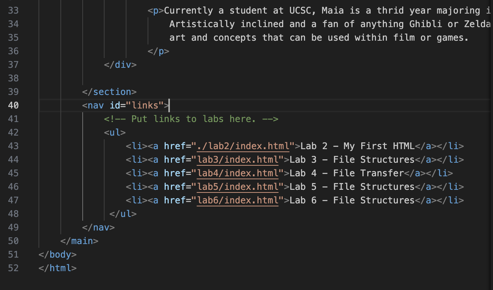
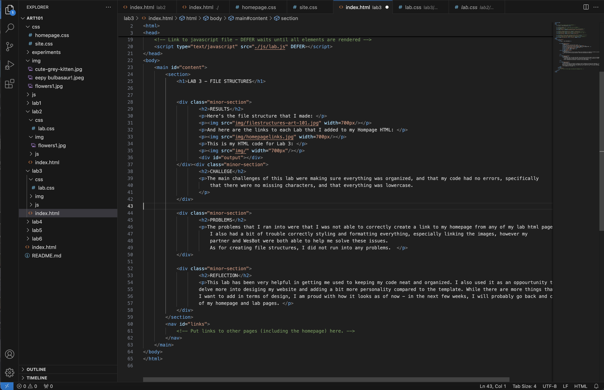
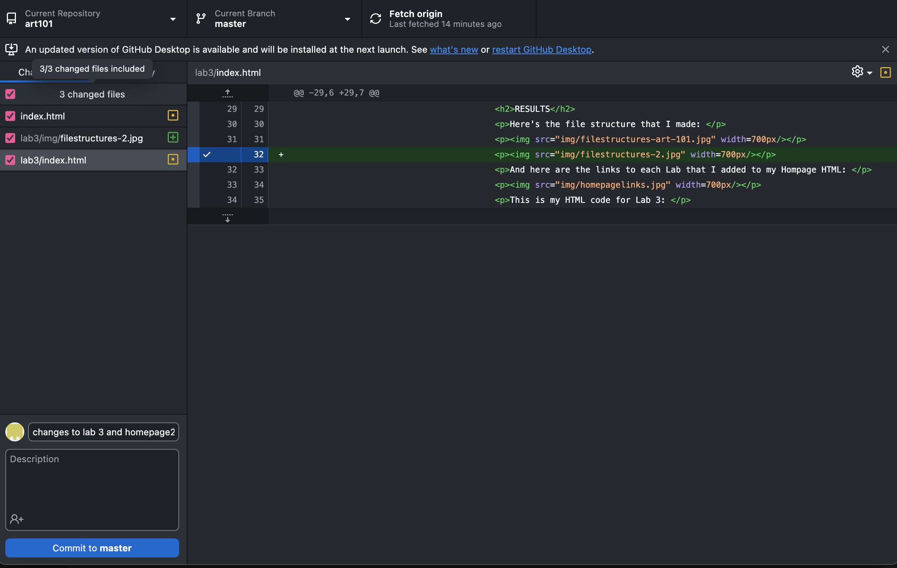
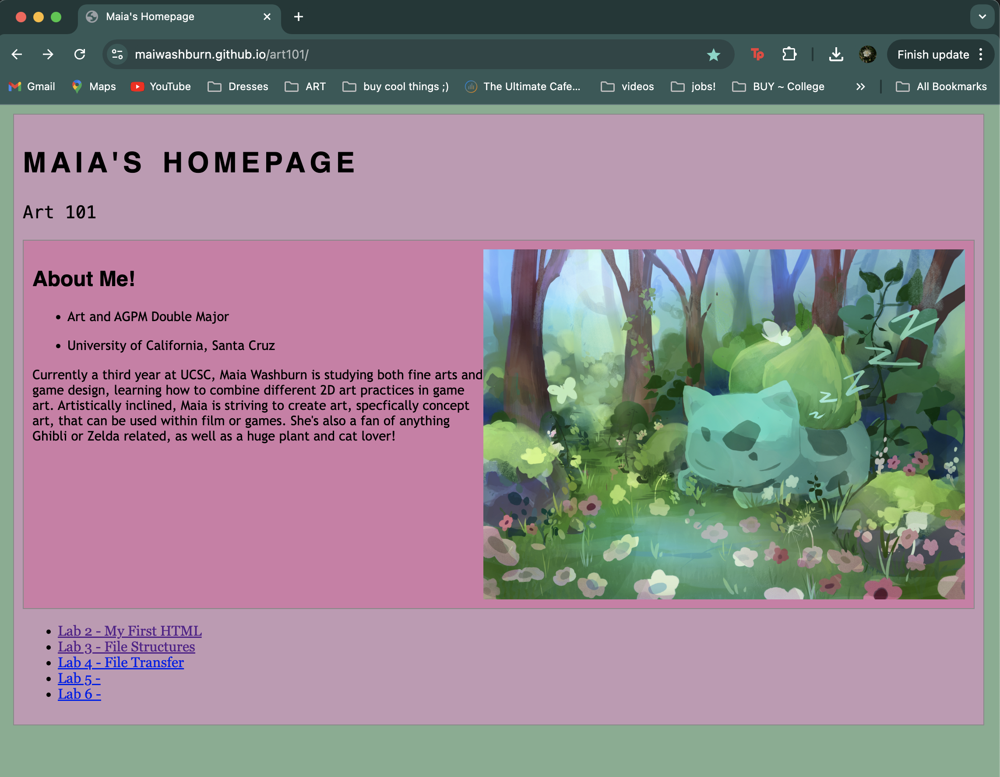

LAB 3 - FILE STRUCTURES
RESULTS
Here's the file structure that I made:


And here are the links to each Lab that I added to my Hompage HTML:

This is my HTML code for Lab 3:

Here are my files listed on the server:

Homepage with Links:

CHALLEGE
The main challenges of this lab were making sure everything was organized, and that my code had no errors, specifically that there were no missing characters, and that everything was lowercase.
PROBLEMS
The problems that I ran into were that I was not able to correctly create a link to my homepage from any of my lab html pages. I also had a bit of trouble correctly styling and formatting everything, especially linking the images, however my partner and WesBot were both able to help me solve these issues. As for creating file structures, I did not run into any problems.
REFLECTION
This lab has been very helpful in getting me used to keeping my code neat and organized. I also used it as an oppourtunity to delve more into desiging my website and adding a bit more personality compared to the template. While there are more things that I want to add in terms of design, I am proud with how it looks as of now - in the next few weeks, I will probably go back and change the look of my homepage and lab pages.